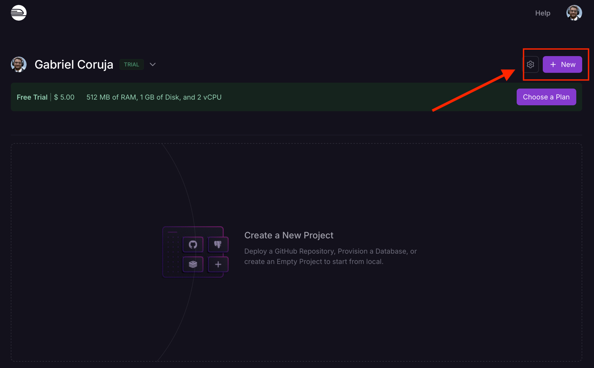
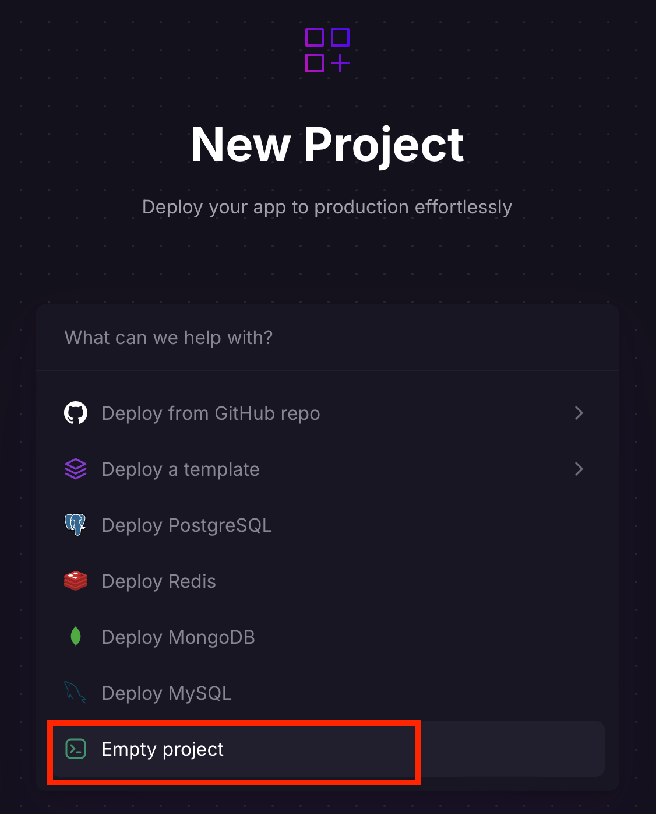
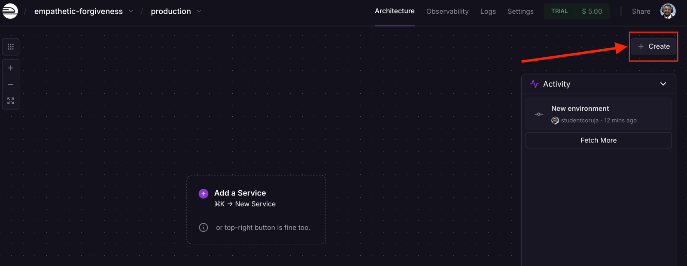
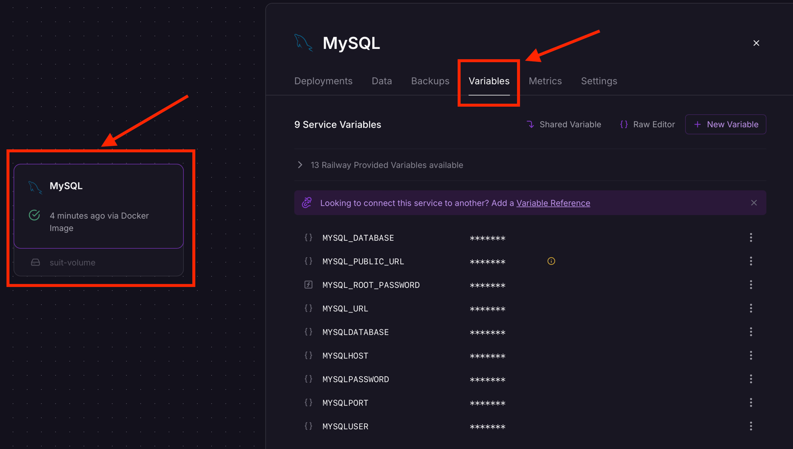
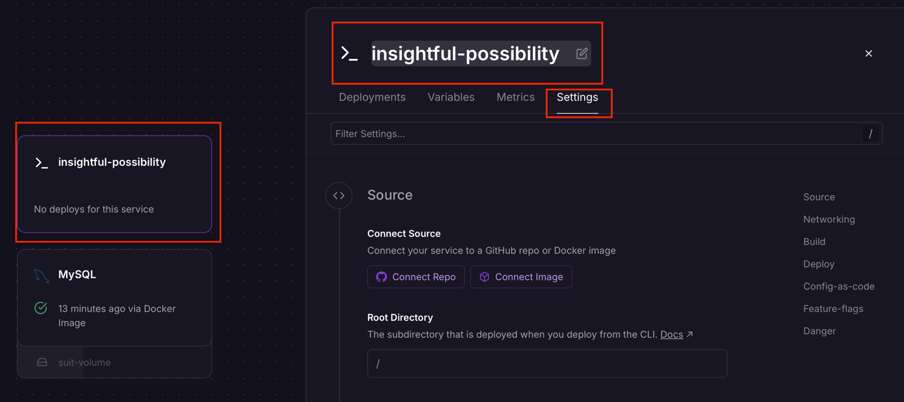
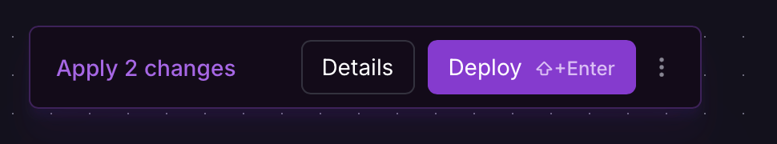
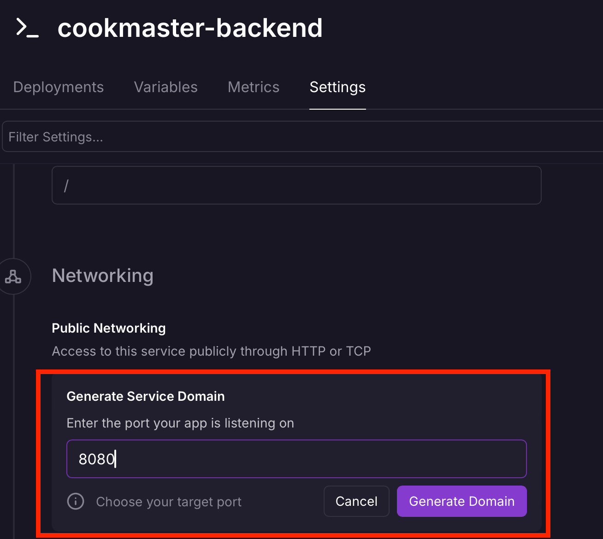

9.6 - Configurando Serviços no Railway
Agora que temos uma conta, vamos criar um novo projeto no Railway. Para isso, clique no botão New Project, conforme destacado na imagem abaixo:

Criação de um novo projeto no Railway
Ao clicar em New Project, será exibido um conjunto de opções que podem ser escolhidas a depender do contexto do deploy. Com a intenção de termos um ambiente flexível, iremos escolher a opção Empty project, conforme destacado na imagem abaixo:

Tipos de projeto disponíveis no Railway
Em seguida, um projeto vazio será criado e exibido na dashboard do Railway. Por padrão, todo projeto criado no Railway recebe um nome aleatório e contém um ambiente chamado production.
Você pode alterar o nome do projeto nas configurações (botão Settings no canto superior direito) e criar outros ambientes, como staging (ambiente de homologação similar ao de produção). Isso é útil para testar funcionalidades antes de disponibilizá-las no ambiente de produção.
Adicionando um Banco de Dados MySQL
Vamos começar adicionando um banco de dados MySQL ao projeto. Clique no botão Create, localizado no canto superior direito:

Criação de um novo projeto no Railway
Será exibida uma janela que pergunta qual tipo de serviço será adicionado. Clique em Database e, em seguida, em Add MySQL.
Depois de realizar o procedimento acima, o serviço MySQL será configurado e estará em execução no projeto.
Atenção ⚠️: Assim que o serviço MySQL for adicionado, o uso dos recursos (dólares e horas) do plano gratuito será iniciado. Caso os recursos do plano sejam esgotados, nenhum valor adicional será cobrado. Para evitar cobranças, você pode remover todos os serviços do projeto.
Na dashboard, clique no card do MySQL para abrir uma janela lateral com opções de configuração e gerenciamento.
Uma dessas opções é Variables, que exibe as variáveis de ambiente necessárias para conectar ao banco de dados:

Variáveis de ambiente do MySQL
A API Cookmaster já está preparada para usar essas variáveis de ambiente e acessar o banco de dados configurado no Railway.
Adicionando o Serviço Back-End
Agora, vamos adicionar o serviço do back-end da API Cookmaster. Clique no botão Create no canto superior direito e escolha a opção Empty Service. Isso cria um serviço vazio, que pode ser customizado conforme necessário. O serviço quando criado, pode estar debaixo do card do MySQL ou o inverso, caso isso ocorra, basta arrastar o card para visualizar ambos.
Inicialmente, o serviço será criado com um nome aleatório. Para renomeá-lo, clique no card do serviço recém-criado. Na janela lateral que será aberta, clique no ícone de edição ao lado do nome atual. Insira um nome como cookmaster-backend e pressione Enter para salvar. Depois vá até Settings para visualizar as configurações da aplicação.

Configurações do serviço da API Cookmaster
As configurações do serviço estão divididas nas seguintes seções:
- Source: Define de onde o código será obtido, como um repositório GitHub ou uma imagem Docker.
- Networking: Configurações relacionadas à rede, como o domínio de acesso.
- Build: Define como o serviço será construído, incluindo diretórios monitorados para disparar novos builds.
- Deploy: Configura o comando de inicialização da aplicação.
- Config-as-code: Permite subir um arquivo com as configurações das seções anteriores.
- Feature-flags: Habilita ou desabilita funcionalidades específicas do Aplicativo.
- Danger: Gerencia a exclusão do serviço.
Após configurar o serviço, ele estará adicionado ao projeto no Railway. O próximo passo será vincular o código do back-end, o que faremos em breve!
Fazendo Deploy do Serviço Back-End
Com o serviço configurado, clique no botão Deploy no centro da página. Isso iniciará o processo de implantação da API Cookmaster.

Deploy do serviço cookmaster-backend
Criando uma URL para o Serviço coomaster-backend
Após o deploy, gere uma URL para o serviço. Clique no card do cookmaster-backend, vá até Settings, role até Networking, adicione a porta 8080 e clique em Generate Domain.
Com isso, o Railway fornecerá uma URL acessível para o back-end da API Cookmaster!

Gerando uma URL para o serviço cookmaster-backend
OBS da IA
Para o SAP CAP
- Equivalente no BTP: em vez de criar o banco manualmente, o
mta.yamldeclara os serviços (HANA Cloud, XSUAA/IAS, destination) e o deploy cria e vincula tudo.
Minhas anotações
Atalhos: ← → navegar · Ctrl K ou / buscar